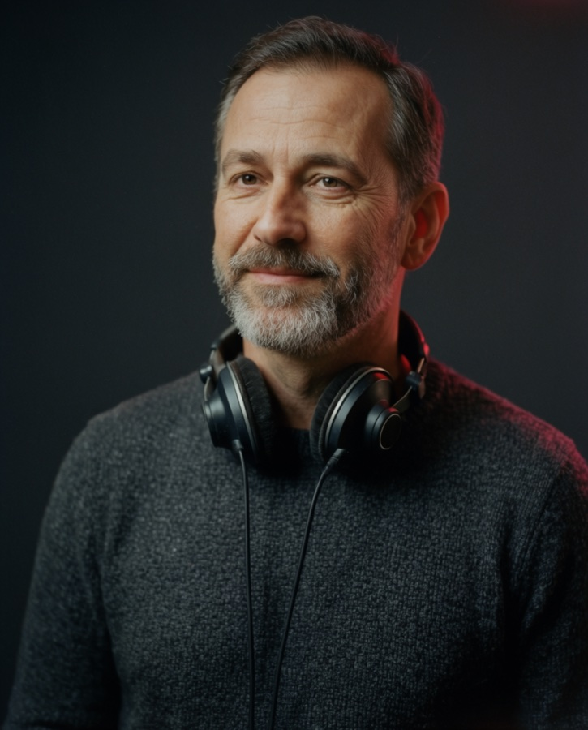
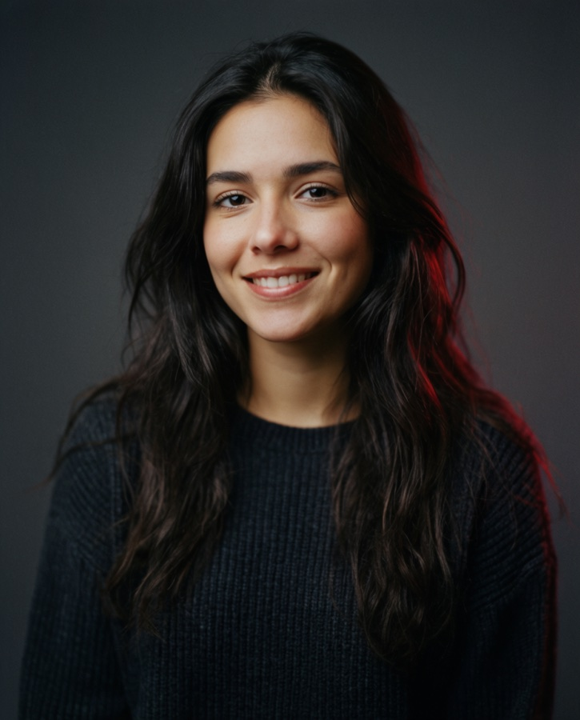
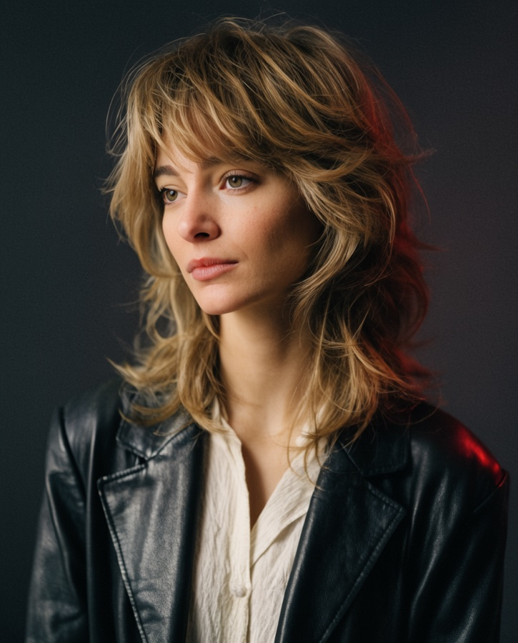
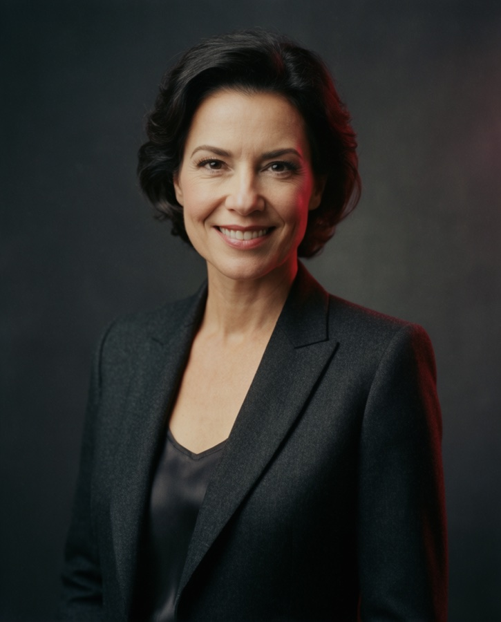
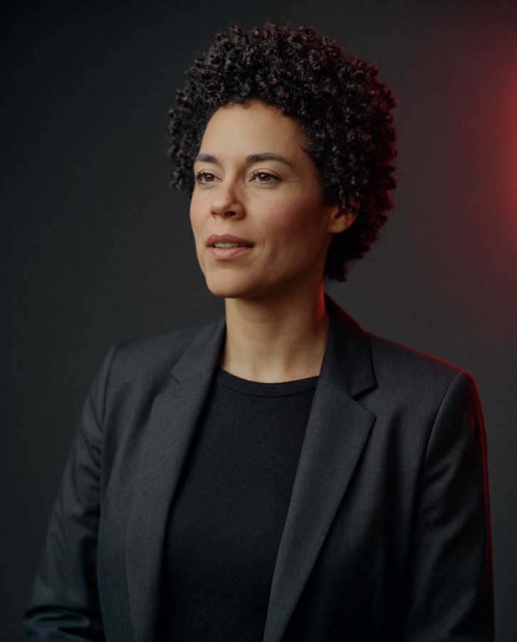

Beş kişilik jüri, üç ayrı alandan gelen isimlerden oluşur. Bu yapı, adayları yalnızca mikrofon başındaki performansıyla değil; müzik bilgisi, sahne duruşu ve dijital dildeki yetkinliğiyle birlikte değerlendirmeyi sağlar.

RadyoYirmi yılı aşkın süredir sabah kuşağında yayın yapan radyo programcısı. Mikrofon tekniği ve canlı yayın refleksi başlıklarında değerlendirme yapar.

Yeni medyaKendi topluluğunu sıfırdan kuran içerik üreticisi. Adayların dijital dili, kamera karşısındaki rahatlığı ve izleyiciyle kurduğu bağı değerlendirir.

MüzikŞarkıcı ve söz yazarı. Müzik bilgisi, kültürel referanslar ve sanatçıyla kurulan sohbetin niteliği üzerinden değerlendirme yapar.

Konuk jüriEkranların tanıdık ismi, sunucu ve yapımcı. Sahne duruşu, hikâye anlatımı ve geniş kitleye ulaşma potansiyeli üzerine yorum yapar.

Radyo Fenomen NextRadyo Fenomen Next müzik direktörü. Adayın yayın kuşağına uyumu ve programını sürdürebilme kapasitesi üzerinden değerlendirme yapar.
Jüri kadrosu program takvimine göre güncellenebilir. Kesinleşen liste, Challenge Day öncesinde program kanallarından duyurulur.